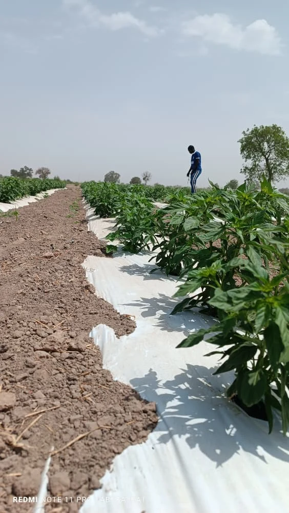
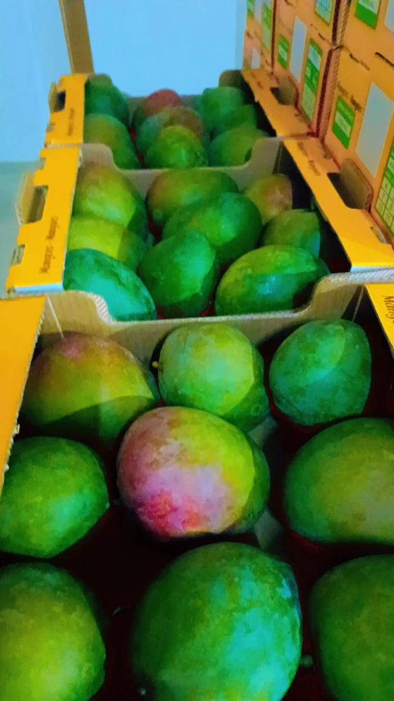
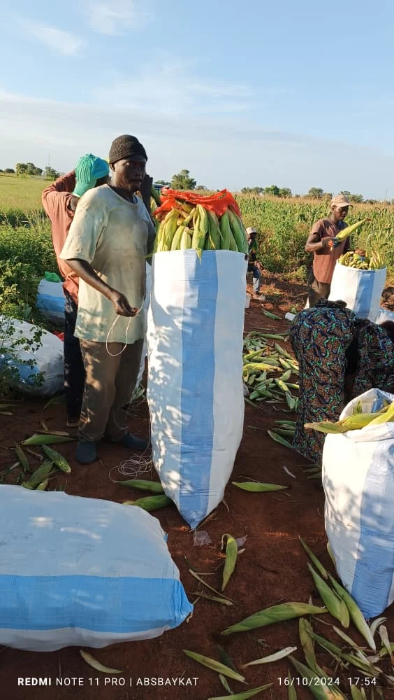
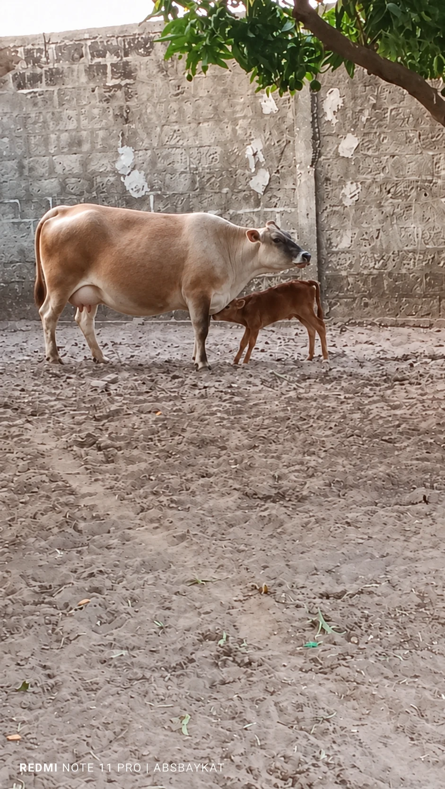
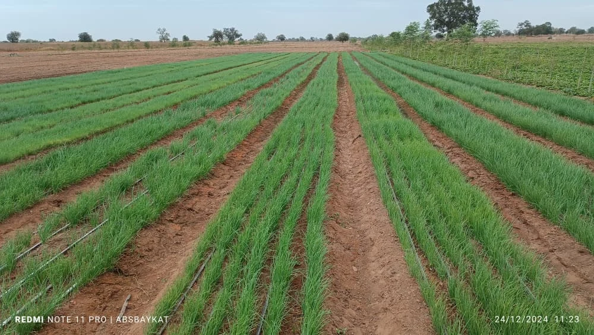

Vente & distribution
Mangue Kent et productions du domaine, pour les marchés locaux et internationaux.
- Produits bruts
- Approvisionnement
- Conditionnement adapté

Depuis 1996, cultiver, transformer et exporter au cœur du Sénégal.
Nos produitsÀ Fatick, le Domaine Agricole de Néma cultive la mangue Kent et développe des activités agricoles, de transformation et d’exportation.
Qualité, traçabilité & certifications
GLOBALG.A.P. · SMETA · Tesco Nurture · GRASPNos engagements qualitéVendre. Transformer. Exporter.
Mangue Kent et productions du domaine, pour les marchés locaux et internationaux.
Valoriser les récoltes au plus près de leur origine.
Des débouchés au Sénégal, en Europe et en Afrique.

Une chair douce et juteuse.

La richesse
de nos terres.

Maraîchage et culture du maïs, en complément de l’arboriculture.

Des productions animales et aquacoles au sein du domaine.
Nos racines.
Votre marché.

Les lignes changent.
La terre reste.
Au Sénégal, en Europe et en Afrique : le domaine développe un réseau de distribution pour ses mangues.
Parlons exportProduit, volume, destination et calendrier.
Format, qualité et conditionnement.
Logistique et documents précisés avant confirmation.
Un interlocuteur pour chaque commande.